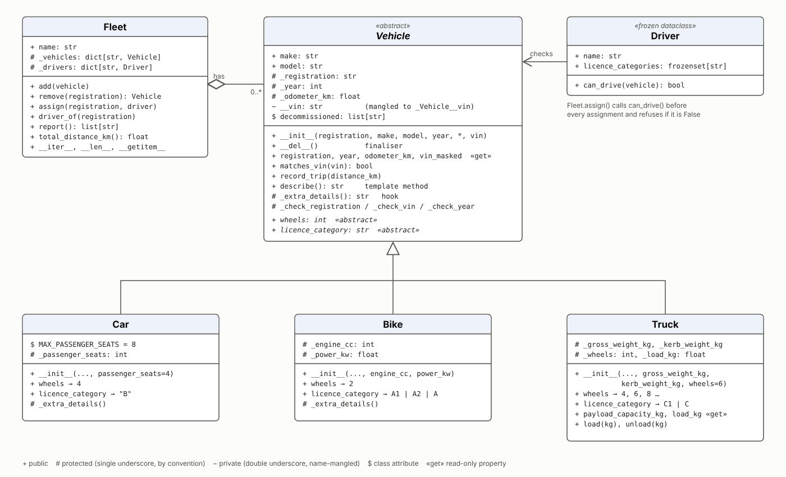

Unit 1: Introduction and Recap of Object-Oriented Programming
In brief: I built a vehicle management hierarchy in Python with 28 tests. Python’s private and protected names turned out to be conventions, not controls, so the protection came from design: read-only properties, validating constructors and a licence check on every driver assignment.
This unit revisits the four pillars of object-oriented programming, inheritance, polymorphism, abstraction and encapsulation, and reviews how classes and objects work, including constructors, destructors and access control. It introduces the role of object-oriented principles in designing large-scale and secure software, and the seminar practical implements a basic class hierarchy for a vehicle management system in Python. The class hierarchy, its tests and a walkthrough notebook are stored below as the unit’s artefact.
Reflection
Structured using the What? So what? Now what? model (Rolfe, Freshwater and Jasper, 2001).
What?
Unit 1 revisited the four pillars of object-oriented programming (inheritance, polymorphism, abstraction and encapsulation), the building blocks of classes, objects, constructors, destructors and access control, and the part these play in large-scale and secure software. I read chapters 7, 8 and 15 of Lott (2024) from the required reading and, from the recommended list, chapters 1 to 3 and 6 of Lott and Phillips (2021), chapter 9 of Matthes (2023) and chapter 11 of Wazlawick (2024). For the seminar practical I built a vehicle management system in Python: an abstract Vehicle class with Car, Bike and Truck subclasses, a Fleet that holds them, a Driver class, 28 tests and a notebook that walks through each concept (Artefact 1). Coming from Security and Risk Management, I wanted access control to matter in the domain as well as in the code, so the fleet only lets a driver take a vehicle that their licence covers.
So what?
I started the week with a Java view of encapsulation: fields are private, and access modifiers keep other code out. The reading did not support that view for Python. Lott and Phillips (2021, ch. 1) separate encapsulation, which wraps state and behaviour behind an interface, from information hiding, and argue that Python programmers neither have nor need fully private variables. In chapter 2 they treat the leading underscore as a convention and advise against creating new double-underscore names at all. The practical bore this out. car._Vehicle__vin returned the private VIN, and assigning to car._odometer_km wound the odometer back to zero. What did protect the odometer was the design: a read-only property, and one method, record_trip(), that checks every change. Matthes’s (2023) Car shows the difference well. Its update_odometer() refuses to roll the reading back, but odometer_reading is a public attribute, so the rule only binds callers who choose to use the method. Parnas (1972) argued that modules should hide the design decisions most likely to change, which is about protecting other programmers from change rather than keeping secrets from them. That suits maintainability, but from a security point of view it means a Python class is not a trust boundary. The step that actually reduced exposure of the VIN was keeping it out of __repr__() and out of error messages, so that it cannot leak into logs.
Writing the base class made me decide what every vehicle shares, and the brief’s word ‘Bike’ turned out to be ambiguous. A bicycle has no registration, VIN or licence category, so it could not honour the promises Vehicle makes. This is Liskov and Wing’s (1994) requirement that what can be proved about a supertype must also hold for its subtypes, which Lott (2024, ch. 8) reduces to the ‘is-a’ question. I took Bike to mean a motorbike, but the lesson was that a base class fixes assumptions for every future subclass, and those assumptions should be written down. Lott and Phillips (2021, ch. 6) suggest that abstract base classes are optional in Python because of duck typing, and should be used only where they make the design clearer. Here the abstract class earned its place. A test subclass that forgot licence_category could not be created at all, rather than producing a vehicle with no category that the assignment check would have to handle. Once the abstraction was in place, polymorphism kept Fleet simple: neither report() nor assign() checks a type.
Fleet holds its vehicles in a dictionary instead of extending one. Lott (2024, ch. 8) shows that a class built by extending list inherits every list method, wanted or not, and Gamma et al. (1994) advise favouring object composition over class inheritance, partly because inheritance exposes a parent’s internals to its subclasses. For this system the choice was about security as much as design. Had Fleet extended dict, every caller would also have had update(), setdefault() and item assignment, any of which could store a vehicle under the wrong registration or silently replace one. With composition, the public operations are the ones I wrote. add() refuses duplicates, and assign(), the only public route to a driver, checks every request and treats an unrecognised licence category as granting nothing. These are Saltzer and Schroeder’s (1975) principles of complete mediation and fail-safe defaults. They were written for operating system protection, but they fit object interfaces closely.
Destructors were where my prior understanding was most wrong. The language reference calls __del__() ‘(improperly) a destructor’, notes that del x only removes one reference, and does not guarantee the method will run when the interpreter exits (Python Software Foundation, 2026). My tests confirmed the first point: deleting a car that the fleet still held did nothing. They also exposed something I had not expected. Python runs __del__() on an object whose constructor raised, so a subclass that calls super().__init__() before validating its own arguments leaves a half-built object that is later finalised. In my code that only adds a registration to a list, but if the finaliser released a resource or wrote an audit record, it would act on a vehicle that never existed. I fixed this by validating before calling the base constructor, but the better lesson is to put nothing important in __del__() and to use explicit methods or context managers instead (Lott, 2024, ch. 7). The destructor tests also depend on CPython’s reference counting, which is a reminder that a test can quietly encode an implementation detail.
The artefact has weaknesses. The licence rules are simplified and hard-coded, when a real system would take them from an authoritative source. The decommissioned list grows without limit and exists only to make the finaliser visible. The licence rules also sit inside the vehicle classes, so a change in the rules means editing the hierarchy. Wazlawick (2024, ch. 11) describes the Strategy pattern for exactly this case, where a procedure varies independently of the data it applies to.
Now what?
Four changes follow. First, I will treat Python access levels as documentation and put the real controls at boundaries: validation in constructors and methods, and sensitive values kept out of __repr__(), logs and exceptions. For values like the odometer I will consider deriving them from an append-only record, so there is no single field to overwrite. Second, before writing a subclass I will state what the base class promises and run the same contract tests against every subclass. Third, I will keep anything that matters out of __del__() and use context managers for cleanup, and I will look for finalisers that do real work when reviewing Python code at work. Fourth, ahead of the design pattern units I will read Sarcar’s (2022) opening chapter from the required reading, which I have not yet done, and revisit the licence rules as a Strategy so that I can compare the two designs in code.
Artefact 1: A Vehicle Management Class Hierarchy
Seminar practical exercise. Python module vehicles.py, 28 unit tests and doctests in test_vehicles.py, and a walkthrough notebook: unit1_vehicle_hierarchy.ipynb. Needs Python 3.10 or later and no third-party packages; run the tests with python -m unittest -v test_vehicles.
An abstract Vehicle class defines what every vehicle in the fleet shares: a registration, make, model, year, VIN and odometer. Car, Bike (taken to mean a motorbike) and Truck extend it and each say how many wheels they have and which driving licence category they need, using simplified DVLA rules. A Fleet holds the vehicles and assigns drivers, and refuses any assignment the driver’s licence does not cover. Figure 1 shows the classes and the access level of each member.

Figure 1: Class diagram of the vehicle management system.
Table 1 maps each concept from the unit to where it appears in the code and the test or notebook result that shows it working.
| Concept | Where it appears | Evidence |
|---|---|---|
| Abstraction | Vehicle(abc.ABC) with abstract wheels and licence_category properties | Vehicle(...) raises TypeError, and so does a subclass that leaves out licence_category |
| Inheritance | Car, Bike and Truck call super().__init__() and inherit validation, the odometer, describe() and __repr__() | An invalid registration is refused by all three subclasses |
| Polymorphism | describe() is a template method that asks each subclass for wheels, licence_category and the _extra_details() hook | Fleet.report() and Fleet.assign() work on any vehicle without checking its type |
| Encapsulation | Read-only odometer_km, changed only by record_trip(); Truck.load() and unload() guard the payload | Assigning the odometer raises AttributeError; a refused overload leaves the load unchanged |
| Constructors | Subclasses validate their own arguments before calling the base constructor; keyword-only arguments | A nine-seat car, a 3,500 kg truck and an invalid VIN are refused |
| Destructors | Vehicle.__del__() records the registration when the finaliser runs | del on a car the fleet still holds does nothing; the finaliser runs once the fleet lets go |
| Access control | Public make, protected _odometer_km, private __vin; Fleet.assign() checks the driver’s licence | car._Vehicle__vin is still readable, but the VIN is masked and kept out of repr(); a category B driver is refused a category C truck |
Table 1: OOP concepts in the artefact and the evidence for each.
An extract of the notebook’s output shows polymorphism and the licence check together. Each line of the report comes from the same describe() call:
2021 Ford Focus (AB12CDE): 4 wheels, licence B, 4 passenger seats, 42.5 km
2022 Honda CB125R (BK19ABC): 2 wheels, licence A1, 125 cc, 11 kW, 0.0 km
2020 DAF LF (TR70XYZ): 6 wheels, licence C, 6,500 of 10,000 kg loaded, 310.0 km
Sam -> AB12CDE: assigned
Sam -> TR70XYZ: refused (Sam is not licensed for category C (TR70XYZ))
Alex -> TR70XYZ: assignedThe notebook also records two findings that shaped the reflection above. Assigning to car._odometer_km still winds the odometer back, because a single underscore is only a warning. And a subclass that calls super().__init__() before validating its own arguments leaves a half-built object that Python later finalises.
References
Gamma, E., Helm, R., Johnson, R. and Vlissides, J. (1994) Design patterns: elements of reusable object-oriented software. Reading, MA: Addison-Wesley.
Liskov, B.H. and Wing, J.M. (1994) ‘A behavioral notion of subtyping’, ACM Transactions on Programming Languages and Systems, 16(6), pp. 1811–1841. Available at: https://doi.org/10.1145/197320.197383 (Accessed: 20 October 2026).
Lott, S.F. (2024) Modern Python cookbook: 130+ updated recipes for modern Python 3.12 with new techniques and tools. 3rd edn. Birmingham: Packt Publishing. Chapters 7, 8 and 15. Available at: https://www.oreilly.com/library/view/modern-python-cookbook/9781835466384/ (Accessed: 20 October 2026).
Lott, S.F. and Phillips, D. (2021) Python object-oriented programming: build robust and maintainable object-oriented Python applications and libraries. 4th edn. Birmingham: Packt Publishing. Chapters 1–3 and 6. Available at: https://www.oreilly.com/library/view/python-object-oriented-programming/9781801077262/ (Accessed: 20 October 2026).
Matthes, E. (2023) Python crash course: a hands-on, project-based introduction to programming. 3rd edn. San Francisco, CA: No Starch Press. Chapter 9. Available at: https://www.oreilly.com/library/view/python-crash-course/9781098156664/ (Accessed: 20 October 2026).
Parnas, D.L. (1972) ‘On the criteria to be used in decomposing systems into modules’, Communications of the ACM, 15(12), pp. 1053–1058. Available at: https://doi.org/10.1145/361598.361623 (Accessed: 20 October 2026).
Python Software Foundation (2026) The Python language reference: 3. Data model. Available at: https://docs.python.org/3/reference/datamodel.html (Accessed: 20 October 2026).
Rolfe, G., Freshwater, D. and Jasper, M. (2001) Critical reflection for nursing and the helping professions: a user’s guide. Basingstoke: Palgrave Macmillan.
Saltzer, J.H. and Schroeder, M.D. (1975) ‘The protection of information in computer systems’, Proceedings of the IEEE, 63(9), pp. 1278–1308. Available at: https://web.mit.edu/Saltzer/www/publications/protection/ (Accessed: 20 October 2026).
Sarcar, V. (2022) Java design patterns: a hands-on experience with real-world examples. 3rd edn. Berkeley, CA: Apress. Available at: https://www.oreilly.com/library/view/java-design-patterns/9781484279717/ (Accessed: 20 October 2026).
Wazlawick, R.S. (2024) Object-oriented analysis and design for information systems: modeling with BPMN, OCL, IFML, and Python. 2nd edn. San Diego, CA: Elsevier Science and Technology. Chapter 11. Available at: https://www.oreilly.com/library/view/object-oriented-analysis-and/9780443137402/ (Accessed: 20 October 2026).